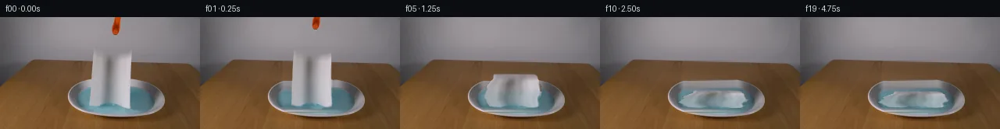

![首帧]()

Round 00
2026-11-05T04:45:38.360360+00:00像素候选变化代码 +236/−0inspection 更新
pixels e19bbdce2b1f8926 · code 3458c18e6a133a41
查看本轮 generate.py 真实 diff
--- previous/generate.py +++ current/generate.py @@ -0,0 +1,236 @@ +#!/usr/bin/env python3 +"""Generate a 20-frame, source-pixel animation of the released paper towel.""" + +from pathlib import Path + +import cv2 +import numpy as np +from PIL import Image, ImageDraw + +import artifact_io + + +ROOT = Path(__file__).resolve().parent +H, W = 144, 256 + + +def smoothstep(x): + x = np.clip(x, 0.0, 1.0) + return x * x * (3.0 - 2.0 * x) + + +def clean_plate(src): + """Remove the towel and tool using row-aware interpolation/inpainting.""" + clean = src.astype(np.float32).copy() + + # The two sides of the vertical towel land on corresponding parts of the + # wall, table, rear rim, liquid, and front rim. Interpolate row by row so + # those horizontal scene layers remain continuous behind the towel. + xa, xb = 106, 176 + x = np.arange(W, dtype=np.float32) + for y in range(36, 123): + left = src[y, xa].astype(np.float32) + right = src[y, xb].astype(np.float32) + f = np.clip((x - xa) / (xb - xa), 0, 1)[:, None] + line = left[None, :] * (1 - f) + right[None, :] * f + # Borrow a little high-frequency texture from neighboring exposed + # pixels rather than leaving a perfectly flat synthetic stripe. + tex_l = src[y, np.clip(xa - 4 + (np.arange(W) % 7), 0, W - 1)].astype(np.float32) + tex_r = src[y, np.clip(xb + 4 - (np.arange(W) % 7), 0, W - 1)].astype(np.float32) + line += 0.10 * ((tex_l + tex_r) * 0.5 - (left + right) * 0.5) + clean[y, xa:xb + 1] = line[xa:xb + 1] + + # Feather only the reconstructed corridor, retaining untouched source + # pixels everywhere else. + corridor = np.zeros((H, W), np.uint8) + cv2.rectangle(corridor, (108, 37), (174, 122), 255, -1) + corridor = cv2.GaussianBlur(corridor, (0, 0), 2.2).astype(np.float32) / 255.0 + rebuilt = src.astype(np.float32) * (1 - corridor[..., None]) + clean * corridor[..., None] + + # Remove the small orange/black tool tip at the upper crop boundary. + tool_mask = np.zeros((H, W), np.uint8) + cv2.fillPoly(tool_mask, [np.array([(145, 0), (156, 0), (154, 13), + (151, 24), (144, 24), (142, 18)], np.int32)], 255) + rebuilt_u8 = np.clip(rebuilt, 0, 255).astype(np.uint8) + return cv2.inpaint(rebuilt_u8, tool_mask, 5, cv2.INPAINT_TELEA) + + +def source_towel_alpha(): + alpha = np.zeros((H, W), np.uint8) + polygon = np.array([ + (119, 39), (168, 40), (168, 91), (170, 108), (164, 114), + (153, 116), (148, 120), (135, 113), (125, 115), (111, 111), + (114, 96), (116, 70) + ], np.int32) + cv2.fillPoly(alpha, [polygon], 255) + alpha = cv2.GaussianBlur(alpha, (0, 0), 1.0) + return alpha.astype(np.float32) / 255.0 + + +def tool_layer(src, frame_index): + """Return the source tool shifted upward after release.""" + yy, xx = np.mgrid[0:H, 0:W] + poly = np.array([(145, -2), (156, -2), (154, 13), (151, 23), + (147, 25), (143, 20), (144, 10)], np.int32) + hard = np.zeros((H, W), np.uint8) + cv2.fillPoly(hard, [poly], 255) + alpha0 = cv2.GaussianBlur(hard, (0, 0), 0.7).astype(np.float32) / 255.0 + dy = -int(round(2.0 + 4.8 * frame_index)) + map_x = xx.astype(np.float32) + map_y = (yy - dy).astype(np.float32) + rgb = cv2.remap(src, map_x, map_y, cv2.INTER_LINEAR, + borderMode=cv2.BORDER_CONSTANT, borderValue=0) + alpha = cv2.remap(alpha0, map_x, map_y, cv2.INTER_LINEAR, + borderMode=cv2.BORDER_CONSTANT, borderValue=0) + return rgb.astype(np.float32), alpha + + … diff truncated; 149 more lines …